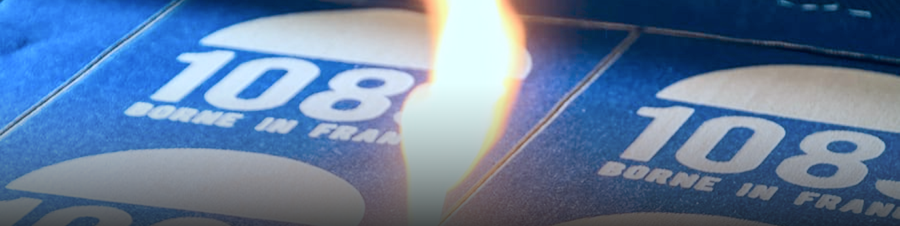
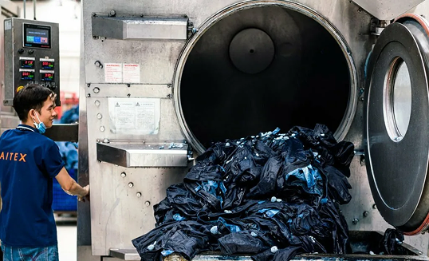
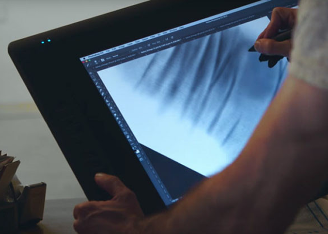
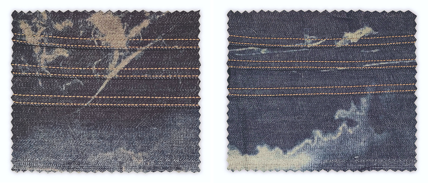

Лазерная обработка денима: как графический
дизайн меняет технологию моды

ПРОЖЖЕННЫЙ ДИЗАЙН

Финальная обработка джинсовой ткани (денима) долгое время была одним из самых вредных этапов производства: потертости и другие эффекты на ткани создавали стиркой с пемзой, хлором и ферментами, расходуя много воды и загрязняя её химикатами. В ряде стран рабочие выполняли такие процессы вручную и без защиты.
С конца 2010-х индустрия переходит на экологичные технологии. Лазерная обработка заменила стирку камнями. Для осветления денима применяют озон, сокращающий расход воды, а пемзу заменяют синтетическими камнями. Эти методы уже внедряют Levi’s, Lee, Wrangler, Uniqlo, Guess и многие другие бренды одежды, которые производят джинсовые линейки, включая производителей из Турции и Пакистана.
Цифровая обработка: где начинается роль графического дизайна
Переход к лазеру превратил работу с денимом в цифровой процесс. Теперь финальный вид потертостей зависит не от хаотичной стирки, а от качества графического макета.
1. Создание макета в графических редакторах
Дизайнер подготавливает будущие прожиги в Adobe Photoshop или специальных программах, учитывая крой изделия, расположение строчек и карманов, а также плотность и оттенок денима.
Лазер считывает макет как карту интенсивности: чем темнее участок, тем глубже прожиг.


2. Тестирование на образцах ткани
Перед запуском производится серия экспериментов:
- проверяются разные ткани
- подбираются нити для отделочных строчек
- тестируются уровни мощности
- оценивается точность передачи макета
Это помогает понять, как данная лазерная графика будет выглядеть на фактуре денима и какая у неё будет интенсивность.
3. Корректировка макета и оптимизация
Этот этап позволяет оптимизировать процесс производства путём снижения отходов и количества тестов, ускорением и упрощением производства. Также она делает возможными создание и воплощение сложных и необычных художественных эффектов в жизнь. Они в свою очередь используются не только в повседневной одежде, но и также в подиумных коллекциях.
Современные джинсы с лазерными рисунками — пример того, как цифровые дисциплины становятся неотъемлемой частью модной индустрии и как графический дизайнер может быть причастен к экологии.